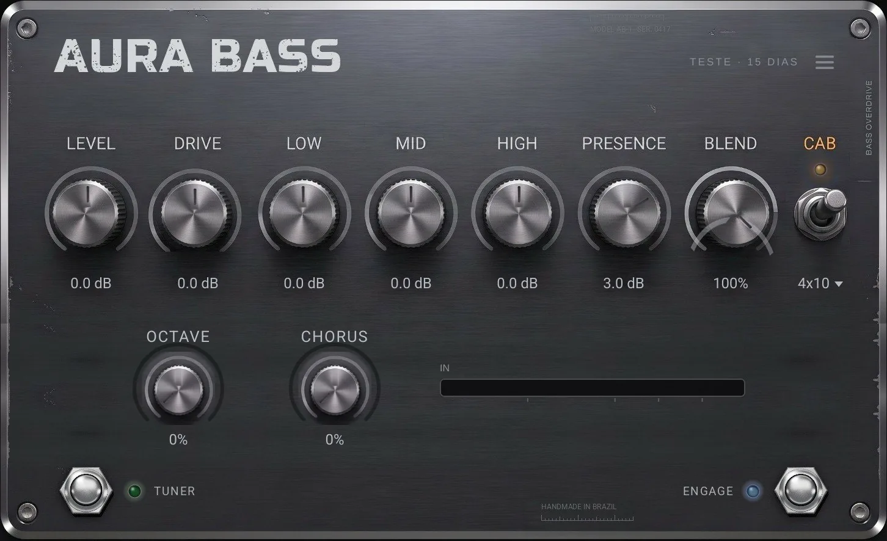
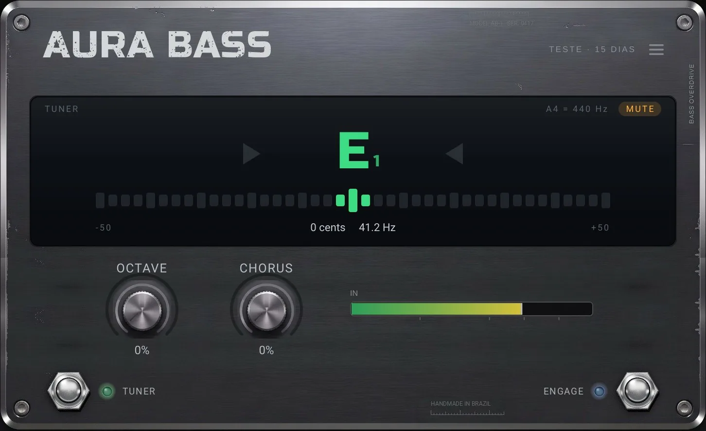

8
timbres de fábrica, um clique cada
Do limpo de gravação ao sub grave. Cada um é um ponto de partida: gire e o som passa a ser seu.
AURA · Clean · Drive · Drive (Stage 2) · Octave (Clean) · Octave (Wild) · Sub Bass · Chorus
AURA Bass
Limpo, drive, oitava, chorus, caixa e afinador no mesmo lugar. No Windows e no Mac, como plugin ou programa.

Abre, escolhe o timbre e toca. Sem montar corrente de plugin entre você e o grave.
8
Do limpo de gravação ao sub grave. Cada um é um ponto de partida: gire e o som passa a ser seu.
AURA · Clean · Drive · Drive (Stage 2) · Octave (Clean) · Octave (Wild) · Sub Bass · Chorus
Saturação assimétrica com 4× de oversampling, somada ao sinal limpo sem atraso nem cancelamento de fase. Dá para sujar muito sem perder o corpo.
Grave, médio e agudo com as frequências certas para contrabaixo, mais presença para o ataque aparecer na mistura.
Simulação por resposta de impulso, com 4×10 e 1×15 à escolha. Desliga com um toque quando a sua DAW já tiver a dela.
Divisor de oitava no estilo analógico, que segue a nota e acompanha a dinâmica da mão. Engrossa sem embolar o grave.
Atraso modulado, lento e discreto, que dá largura ao som sem desafiná-lo. Bom para partes limpas e notas longas.
Um footswitch transforma o painel em afinador e silencia a saída. Afina entre uma música e outra sem tirar o baixo do cabo.
Veja o sinal que chega e acerte o ganho de entrada arrastando no próprio medidor. Baixo passivo e ativo ficam no mesmo nível.
Liga e desliga só o drive, mantendo a equalização. Para tocar limpo e sujar na hora certa.
Afinador
Toque o footswitch TUNER: a saída fica muda e o painel vira um afinador grande, legível de longe, com a nota e os cents.

Todos os recursos liberados. Sem cartão.
O instalador do AURA ainda não tem assinatura digital paga, então o Windows e o Mac mostram “desenvolvedor desconhecido”. Se você baixou desta página, pode continuar.
O instalador é para Windows e Mac. Abra esta página num computador para baixar.